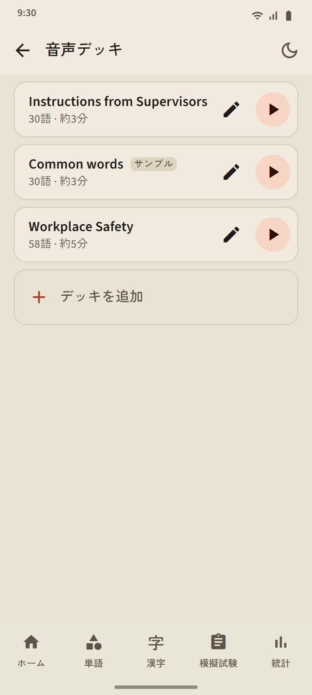

自分で作る音声デッキ
5〜100 語でデッキを作ります。一つずつ検索しても、単語デッキからまとめて取り込んでもかまいません。プレーヤーは単語を日本語で読み上げ、続けてアプリの言語で意味を読み上げます（日本語だけにするには「意味を読み上げる」をオフに）。今の単語はふりがなつきで大きく表示され、一覧の単語をタップするとそこへ移ります。
操作：シャッフル、リピート、速さ 0.75×、1×、1.25×。画面が消えても、ほかのアプリに切り替えても再生は続き、通知やイヤホンのボタンで操作できます。
- 無料版：デッキ 3 つ。プレミアム：無制限で、デッキを一つの音声ファイル（M4A）としてダウンロードできます。
- よく使われる単語からサンプルのデッキ「Common words」が自動で作られます。自由に編集・削除できます。
- 聞くだけでは、単語の復習予定や段階は変わりません。


話す練習：言えたら次へ
覚えた、または習得済みの単語がカードに出ると、マイクが自動でオンになります。単語を言ってスマホが聞き取れれば、次の単語が出ます。聞き取れなかったときは聞こえた内容を表示してもう一度聞き、3 回試すと手本の発音を流します。マイクのボタン、手本のボタン、スキップはいつでも使えます。1 回のセッションは 5、10、15、20 語です。
声はスマホの音声認識サービス（ふつうは Google）が処理し、アプリが録音・保存することはありません。判定するのは単語だけで、なまりは問いません。音声認識は聞き違えることがあるため、この練習で単語の段階が下がることはありません。

漢字を書く：一画ずつ
覚えた、または習得済みの漢字で練習します。表示されるのは意味と読みだけで、画面幅いっぱいの枠に書くと、指を離すたびにその画の形、向き、書き順をチェックします。正しい画は手本の形に整い、書き順の誤りや向きの逆は一文で知らせて受け付けません。2 回まちがえると、次の画が書き始めの位置とともにうすく表示されます。
- 思い出して書く：何もない枠。なぞり書き：漢字がうすく見えるので、ウォームアップ向き。順番にタップ：漢字が全部見えていて、画を順番にタップします。
- アニメーションボタンで、いつでも漢字全体の書き方を再生できます。
- 別々の 2 日に、何も見ずに助けなしで書けると、その漢字は書けるになります。1 回のセッションは 5、10、15 字です。


どこでも発音
単語カード、漢字カード、単語の詳細、かなのレッスン、文法の例文、聴解問題は、どれもスマホの日本語音声読み上げエンジンが読むので、音声ファイルをダウンロードする必要はありません。声の品質はスマホのエンジンによって異なります。